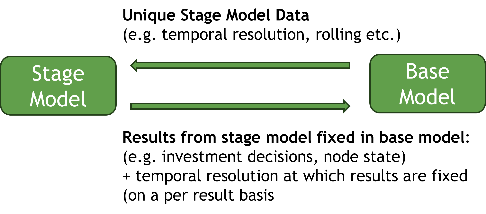
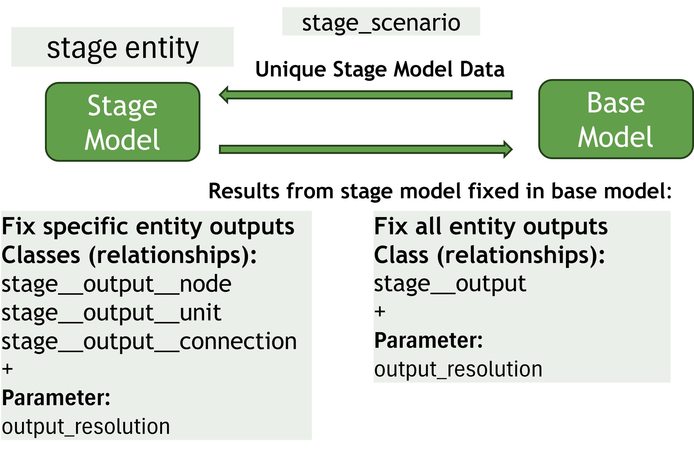
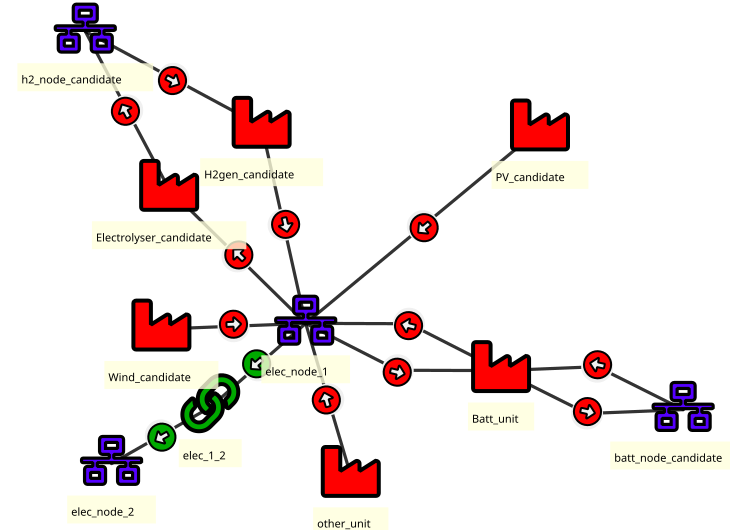
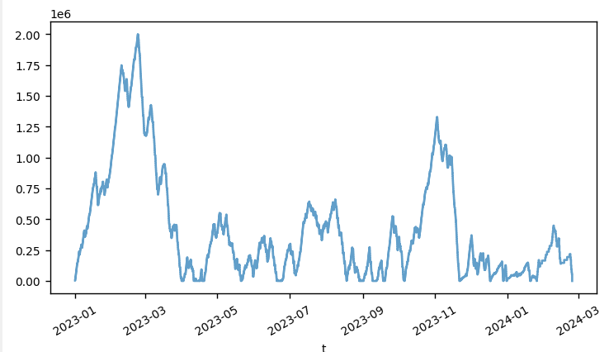
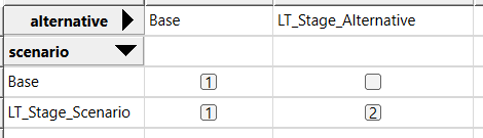
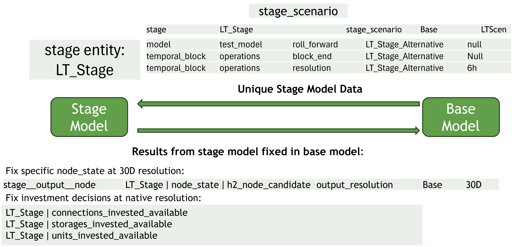
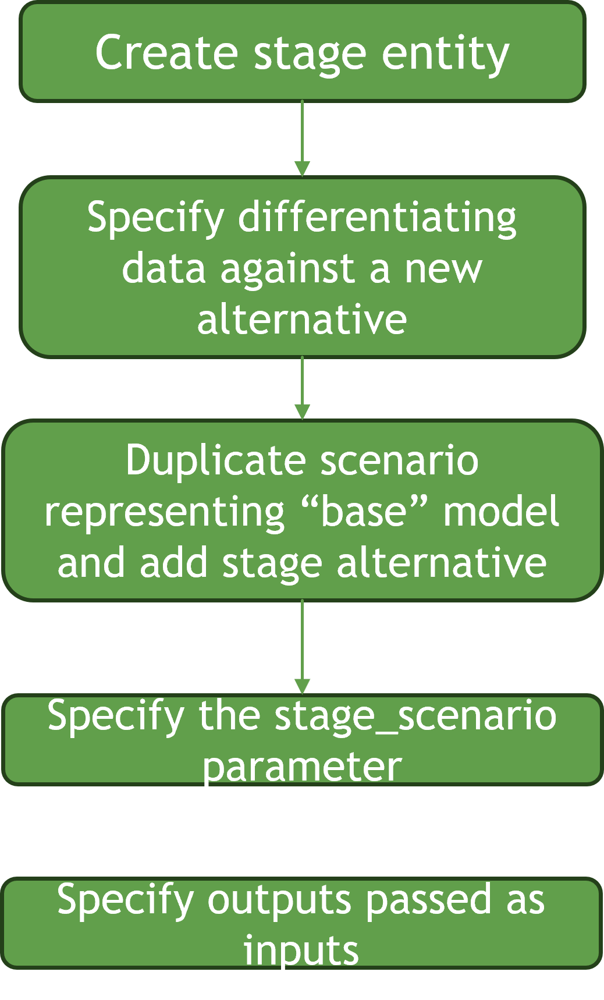
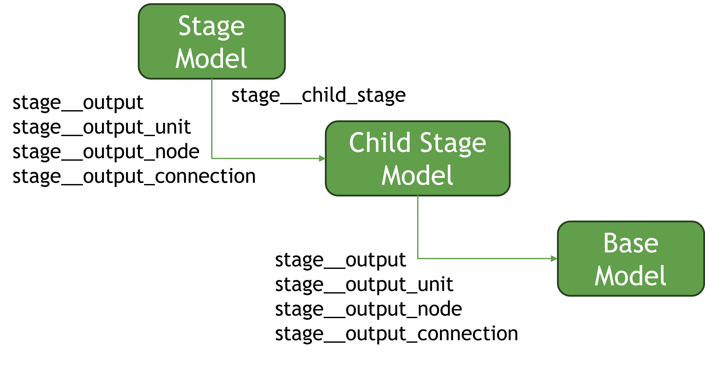

Multi-Stage Optimisation Tutorial
In this tutorial we will explain how to create a multi-stage optimisation within a SpineOpt model. The functionality allows multiple models to be defined with outputs from one model passing as inputs to another model. This can be very useful to leverage the flexible temporal structure of SpineOpt to create similar linked models with different structures. For example, using this functionality, one can easily create a long term model which passes investments and long term storage trajectories to a short term operational model.
The Basic Idea
The basic idea is we start with a base SpineOpt model, for example, an operational model. From this, we can specify a stage model (for example, a long-term model). We define the stage model by specifying the unique data which makes it different from the base model. We then link the models by specifying which outputs from the stage model pass as inputs to the base model.

Creating a Stage Model
A stage model is created by creating an entity of class stage.
Specifying the Stage Model Data
A stage model is defined by the data which is unique to it. The is achieved by creating a scenario (stage scenario) which represents the stage model. Usually the base model and stage model will differ only in some limited respects, for example, the temporal structure. In practice, the best way to create the stage scenario is to duplicate the scenario which represents the base model and creating a stage alternative and then adding that altnerative to the stage scenario meaning the base model and stage model will differ only according to the data specified under the stage_altnernative

Specifying which outputs pass from the stage model as inputs to the base model
To specify which outputs pass as inputs to the base model, we use entities of class: stage__output. This links our stage entity with any number of output entites. For example, if our stage entity is named LT_Stage and we wish all unit investment decisions to pass from our stage model as inputs to our base model, we would create a stage__output entity linking LT_Stage and units_invested_available. If we wish to fix inputs in the base model only at certain intervals, we can use the output_resolution parameter.
Using stage__output, outputs for all entities pass from the stage model to the base model. If we wish outputs for specific entities only to be passed, then we use
stage__output__nodestage__output__unitstage__output__connection
depending on whether the output is associated with a node, a unit or a connection.
Test System
The simple test system is illustrated below.

The test system can be found in JSON form at multistagemodel_tutorial.json
The model must invest in wind, solar, battery and storage in order to satisfy demand. The base model is configured as a rolling operational model with the following temporal structure:
Temporal Resolution:
- Days 0 - 30 (
operations:temporal_block) 1h - Days 31 - 60 (
look_ahead:temporal_block) 6h - Rolling duration: 30D
Looking at the node_state result for the h2_node_candidate node we immediately see that it is not well optimised. Because the model is rolling and sees only 60 days at a time, the store is always emptied at the end of the rolling period because no value is seen beyond 60 days.

We can solve this problem using the stage functionality to create a long term model that sees the full year all at once and passes the node state as an input to the base rolling model.
Step 1: Create stage entity
Using Spine Toolbox DB Editor, we right click on the stage entity class and select: "add entities". We will call our new stage entity: LT_Stage
- Commit changes
Step 2: Create stage alternative
Using DB Editor, we click into the alternatives pane and create a new alternative called LT_Stage_Alternative.
Step 3a: Create stage scenario
- Using DB Editor, we click into the scenarios pane and create a new scenario called
LT_Stage_Scenario - Switch to the scenario pivot view by clicking on scenario in the tool ribbon
- Duplicate the base scenario by right clicking on "base" and selecting "duplicate scenario" from the context menu
- Add the base alternative to
LT_Stage_Scenarioby checking the box. It should indicate "1" indicating that base data gets written first - Add the
LT_Stage_Alternativealternative toLT_Stage_Scenarioby checking the box. It should indicate "2" indicating that theLT_Stage_Alternativegets written second, overwriting base data - Commit changes
Your scenario/alternative grid should look like this:

Step 3b: Associate scenario LT_Stage_Scenario with the stage model
We need to tell SpineOpt that the LT_Stage_Scenario contains the unique data for the stage entity: LT_Stage
- Select the LT_Stage
stageentity - Switch to the parameter value_pane
- class and entity_byname should be prefilled
- for parameter name, select
stage_scenario - enter the text:
LT_Stage_Scenario(this is the textual name of the LTStageScenario scenario we created above)
Step 4: Create LT_Stage data
So what is different about our long term model compared to our operations base model?
- The model doesn't roll, it sees the full year all at once.
- Since it doesn't roll and we see the full year, we don't need the
look_aheadtemporal_block - Instead of 1h resolution, we want 6h resolution (otherwise our long term model will take a very long time to solve)
- Our operations
temporal_blockno longer ends after 30 days.
To implement these changes, we use the LT_Stage_Alternatives to create parameters that will override the corresponding base model data, as follows:
Turn rolling off for the
LT_Stage_Alternative:- Select the
test_modelentity in the model class - Switch to parameter value view
- Class and
entity_bynameshould be prefilled. Selectroll_forwardin the parameter name field. - In the alternative field, select
LT_Stage_Alternative - In the value field, right click the cell and select
edit. - Select plain value
- Select
null - Commit changes
- Select the
Remove the
look_aheadtemporal block from theLT_Stage_Alternativeby:- switch back to table view by clicking
tablein the ribbon - switch to the
entity_alternativetab - select the
look_aheadtemporal block entity - in the bottom row,
classandentity_bynameshould be prefilled. In the alternative field, selectLT_Stage_Alternative - In the
activefield, selectfalse - Commit changes
- switch back to table view by clicking
Change the temporal resolution of the operations
temporal_blockto 6h- Select the operations entity in the
temporal_blockclass - Class and
entity_bynameshould be prefilled. - Select
resolutionin the parameter name field. - Right click value field and select edit
- Select
duration value - enter "6h"
- Commit changes
- Select the operations entity in the
remove
block_endof the operationstemporal_block- Select the operations entity in the
temporal_blockclass - Class and
entity_bynameshould be prefilled. - Select
block_endin the parameter name field. - Right click value field and select edit
- Select "plain value"
- select null
- Commit changes

- Select the operations entity in the
Step 5: Specify outputs from the LT_Stage model that pass as inputs to our Base model
We want to make sure that the following Long Term model outputs pass as inputs to the base model:
- All unit investment decisions
- All connetion investment decisions
- All storage investment decisions
node_statefor the seasonalh2_node_candidatenode
To pass outputs for all entities for a certain output, we need to create 2-Dimensional entities of class stage__output
- For unit investment decisionss
- Right click on
stage__outputclass - Select: add entities
- For
stageselectLT_Stage - For
outputselectunits_invested_available
- Right click on
- For connection investment decisionss
- Right click on
stage__outputclass - Select: add entities
- For
stageselectLT_Stage - For
outputselectconnections_invested_available
- Right click on
- For storage investment decisionss
- Right click on
stage__outputclass - Select: add entities
- For
stageselectLT_Stage - For
outputselectstorages_invested_available
- Right click on
- Commit changes
To pass node state for the h2_node_candidate, we need to create a 3-Dimensional entity of class stage__output__node
- Right click on
stage__output__nodeclass - Select: add entities
- For
stageselectLT_Stage - For
outputselectnode_state - For
nodeselecth2_node_candidate - Commit changes
For node_state, we don't want to overconstrain the operations problem, so we only want the node_state in the operations model to be fixed at intervals, thus allowing some flexibility in the operations model while also following the seasonal trajectory from the long term model. To do this, we use the output_resolution parameter for the stage__output__node we just created above
- Select the
stage__output__nodewe just created above in the tree - The class and entitybyname fields should be prefilled
- For parameter name, select
output_resolution - Right-click the value field and select edit
- Select duration value
- Enter "30D"
- Commit changes

Run Model
Now you have successfully created a Long Term Stage Model that feeds a selected node_state and all investment decisions to the Base Model
Run the model, making sure to run the "Base" scenario. Remember the LT_Stage_Scenarios purpose is only to specify the unique data for the stage model. It's not a scenario that you actually run (unless you would like to see the outputs of the long term model only).
Nested Models
It is possible to create multiple linked stage models to created a nested structure. To do this, you use the entities of type stage__child_stage to specify the relationships between two stages. stage__child_stage will determine the directionality of outputs passed using stage__output.
In our example, if we wanted to create an intermediary model between the long term model and the base model, we would create a new stage entity called, say MT_Stage. To specify that outputs from LT_Stage pass as inputs to MT_Stage we could create an entity of type stage__child_stage where stage is LT_Stage and child_stage is MT_Stage. Outputs specified using stage__output would now pass from the LT_Stage model as inputs to MT_Stage. To specify what outputs pass from MT_Stage as inputs to the base model, we create new entities of type stage__output between MT_Stage and the required outputs
